01 · 이름과 나이 입력
로그인 없이 아이의 이름과 나이만 입력해 시작합니다.
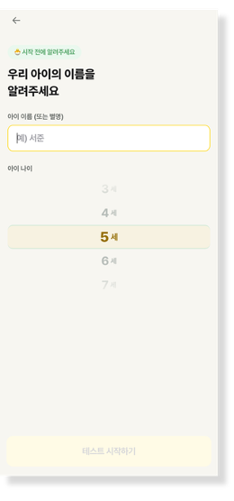
아이의 성향을 이해하고, 어울리는 체험을 발견하는 1분 놀이 성향 테스트. 탐색의 불편을 줄이고 테스트 결과를 맞춤 체험 추천으로 연결했습니다.
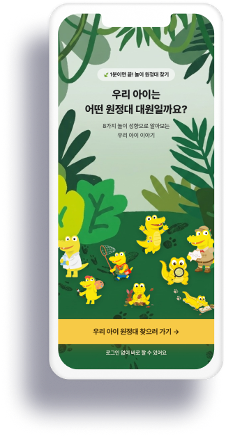
63명을 대상으로 한 설문에서 재참여하지 않은 응답자 중 73.5%가 탐색의 불편을 이유로 꼽았습니다. 부모는 프로그램을 고를 때 새로운 경험과 아이의 흥미를 주로 고려했으며, 약 30%는 아이의 흥미를 선택 기준으로 삼았습니다.
문제를 체험 상품의 부족이 아닌 아이와 상품을 연결하는 탐색 과정의 부재로 정의했습니다. 아이의 흥미와 놀이 성향을 먼저 파악하면 다음 체험을 고르기 쉬워질 것이라는 가설을 세웠습니다.
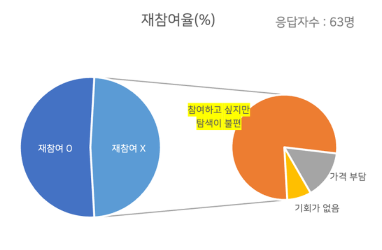
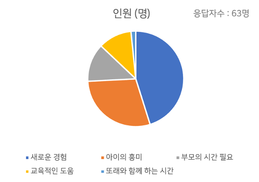
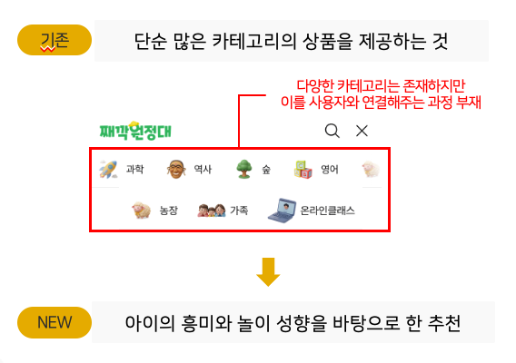
로그인 없이 아이의 이름과 나이만 입력해 시작합니다.

일상에서 관찰할 수 있는 놀이 상황에 답해 성향을 파악합니다.
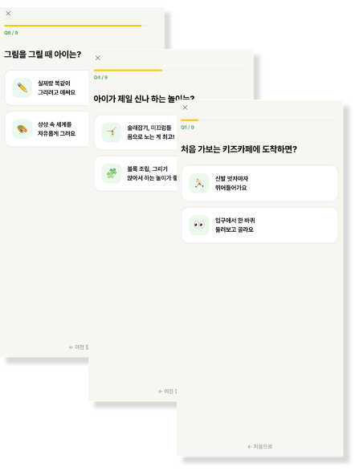
8가지 놀이 유형과 4가지 원정대에 연결된 캐릭터와 행동 설명을 확인합니다.
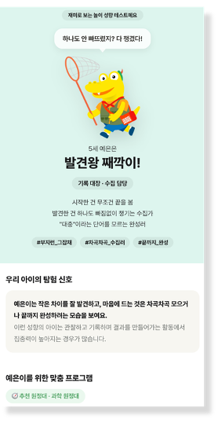
아이의 성향에 맞는 체험 프로그램을 살펴보고 구매 링크로 이동합니다.
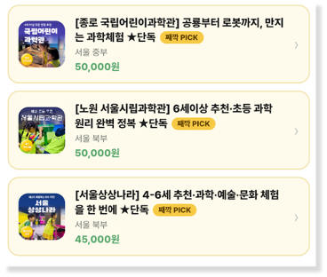
기획, 화면 디자인, 개발·배포, 마케팅, 데이터 분석을 End-to-End로 수행했습니다. AI로 초안을 빠르게 만들고, 서비스의 핵심 판단과 검수는 직접 맡았습니다.
탐색 문제 정의
8가지 유형과
추천 로직 설계
정보 흐름 설계
브랜드 톤 결정
기능 동작 검수
타깃 맞춤 문구
GA 이탈 지점 분석
공유 기능 개선
AI는 카피·네이밍 후보 생성, 화면 시안 시각화, 개발 구현, 그림·아이콘 생성, 분석 지표 설계 초안에 활용했습니다.
숲 배경과 브랜드 대표 캐릭터로 원정대 콘셉트를 표현하고, 시작 버튼을 ‘우리 아이 원정대 찾으러 가기’로 변경했습니다.
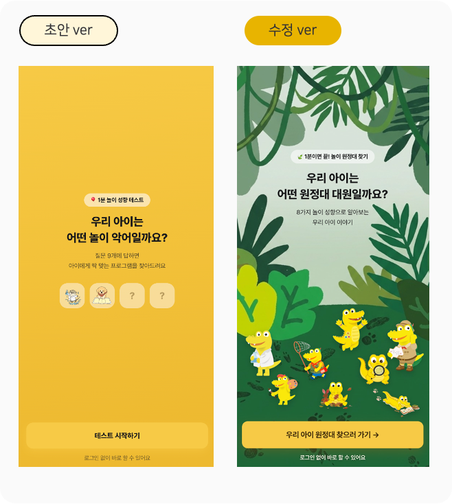
‘발견왕 째깍이’처럼 유형별 이름과 말투에 개성을 부여했습니다. 추상적인 설명을 부모가 떠올릴 수 있는 행동으로 바꾸고 줄바꿈을 조정해 읽기 쉽게 만들었습니다.
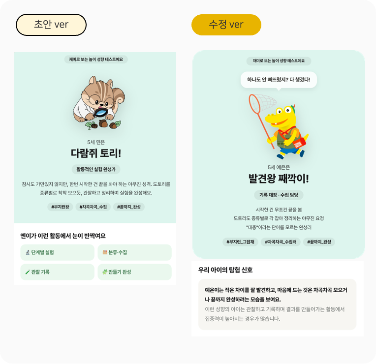
가장 많은 결과 유형은 AXF(호기심 대장 째각이)로 39.4%를 차지했습니다.
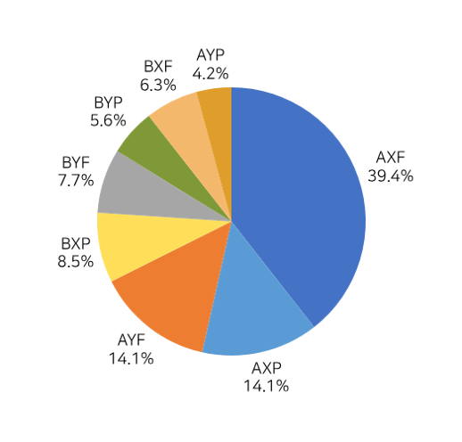
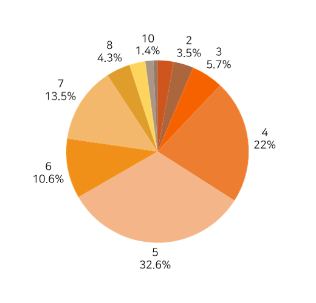
공유할 때 결과보다 ‘나의 결과’가 먼저 보이고, 긴 URL이 카카오톡 대화방의 가독성을 떨어뜨리는 문제를 발견했습니다. 공유 카드 썸네일을 유형별 캐릭터로 교체하고, 소개 문구를 결과 유형에 맞게 바꾸며 URL 노출 방식을 조정했습니다.
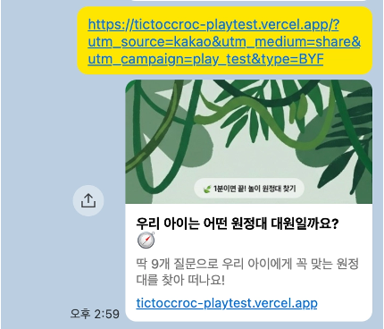
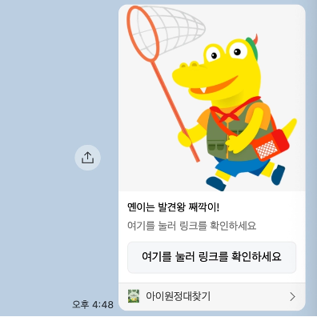
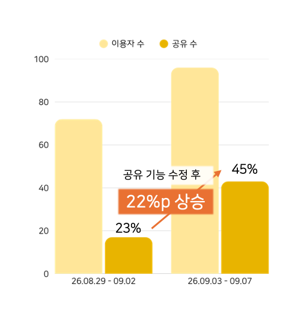